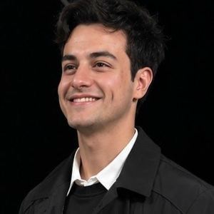

Austin · 30.26N
Useful knowledge should survive the agents that first learned it.
A memory system built around reconstruction, not a shared store.
Agent networks have a persistence problem. Useful knowledge is often trapped in one context window, one process, or one central memory service. Replicate everything and the system becomes expensive, leaky, and increasingly difficult to reason about. Keep everything local and the network forgets when the wrong agent disappears.
Mycelic treats persistence as a property of the network. NeuralGraph keeps structured local memory; lineage records where knowledge came from and which independent paths support it. Retrieval follows temporal, semantic, entity, causal, hierarchy, and co-activation structure instead of dumping a global context into every agent.
The research question is whether a population can retain the ability to reconstruct task-sufficient knowledge through selective redundancy and repair. Tesseract routes reconstruction across authorized memories; collective-forgetting experiments remove nodes, roots, routes, and support paths to measure what actually carries capability. The target is not universal recall. It is recoverability under failure.
Current manuscripts.
Work before the current problem.
| 2026—Now | Snorkel AI | AI Mathematical Reasoning Specialist |
| 2026—Now | Mercor | Mathematical Reasoning Specialist |
| 2025 | Fujitsu | AI / ML Engineer Intern |
| 2024 | TechnipFMC | Software Developer Intern |
| 2021 | PATHS-UP | Machine Learning Intern |